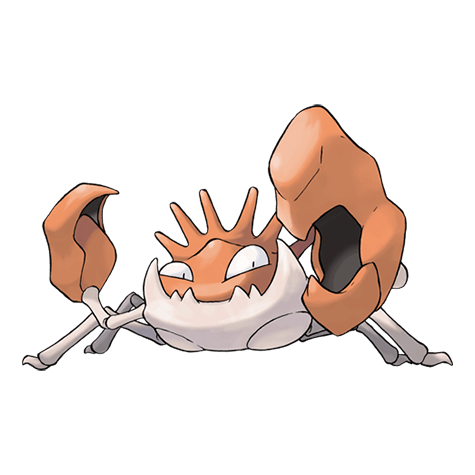

Назад
Кинглер

Кинглер — Покемон первого поколения под номером 99 в Покедекс. Обитает он в регионе Канто и относится к Водному типу. Это последняя стадия эволюции Покемона Крабби. Кинглер имеет одну огромную клешню. Размахивая ей в воздухе, он может общаться с другими существами жестами. Однако клешня очень тяжела, и поэтому Кинглер быстро устаёт от этого занятия.
Тип:
Водный
Эволюция
# 099 Кинглер
Финальная стадия